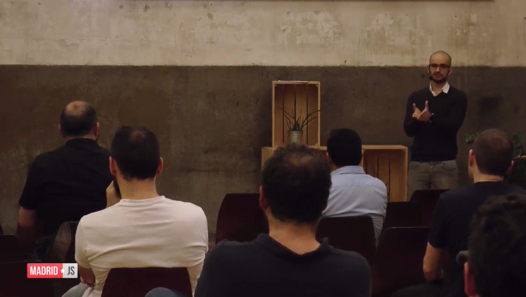
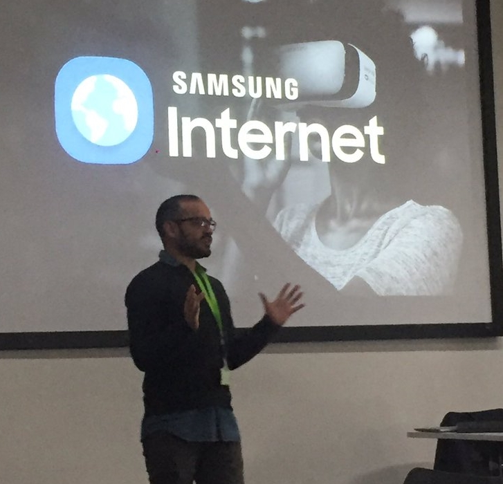
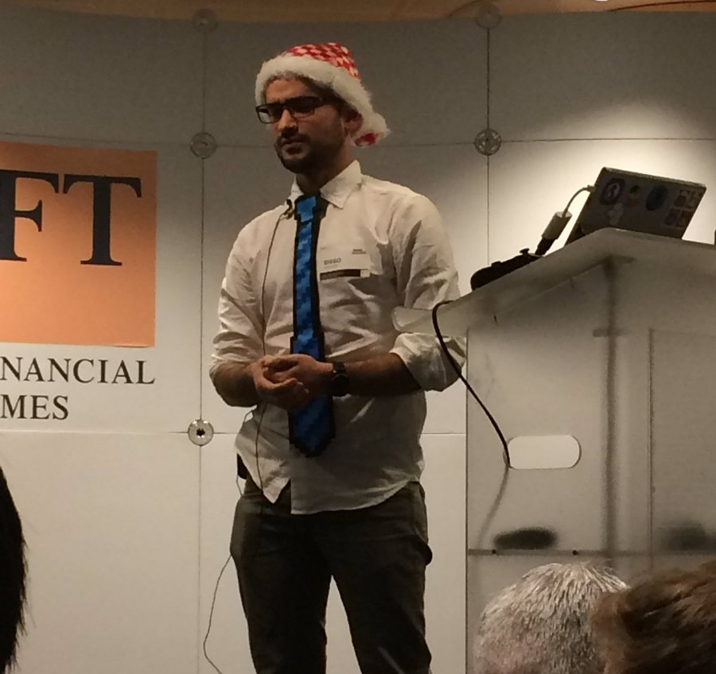
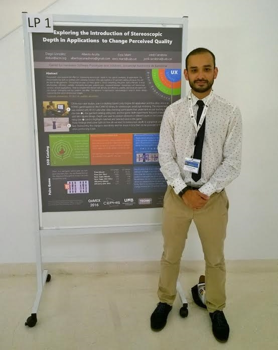
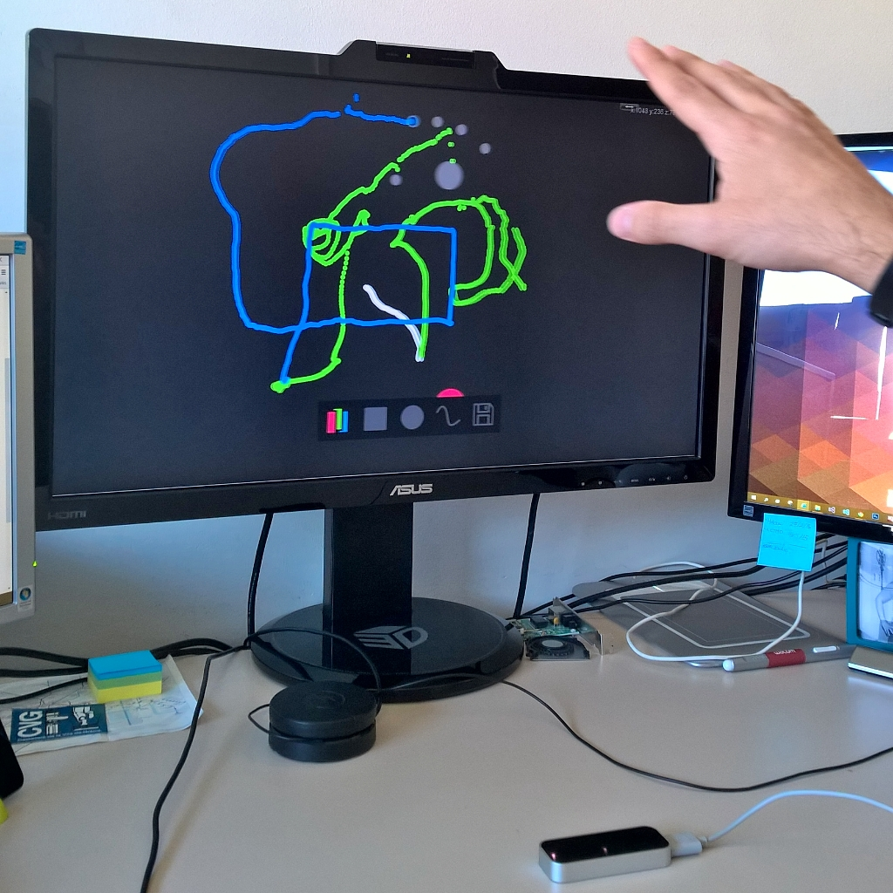
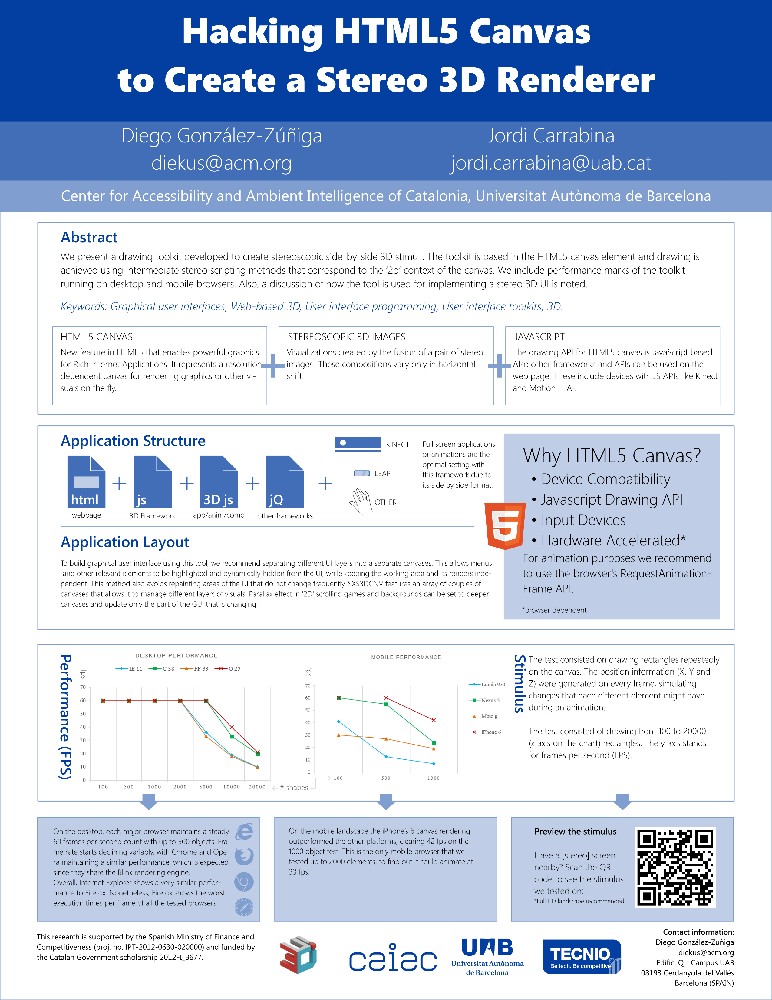
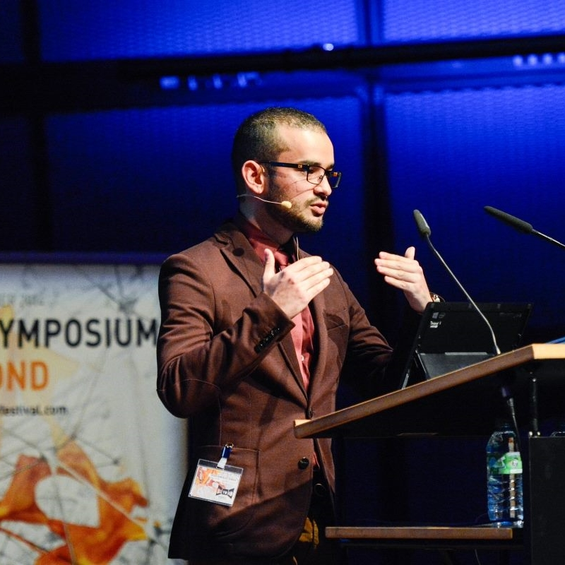
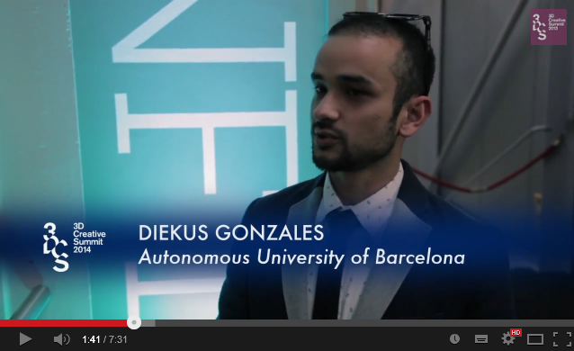
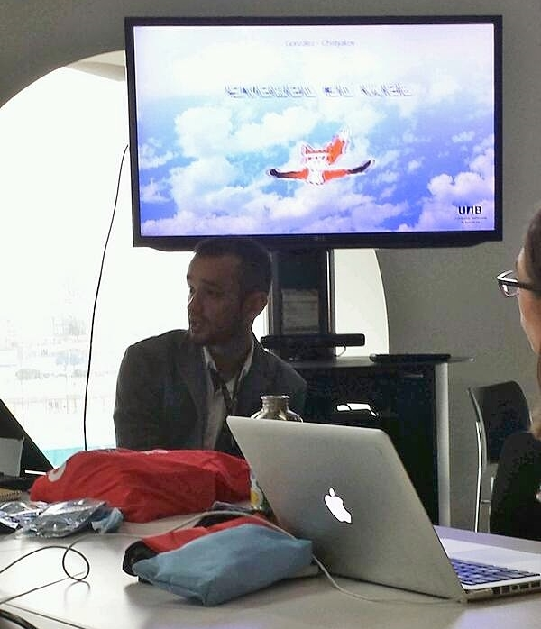
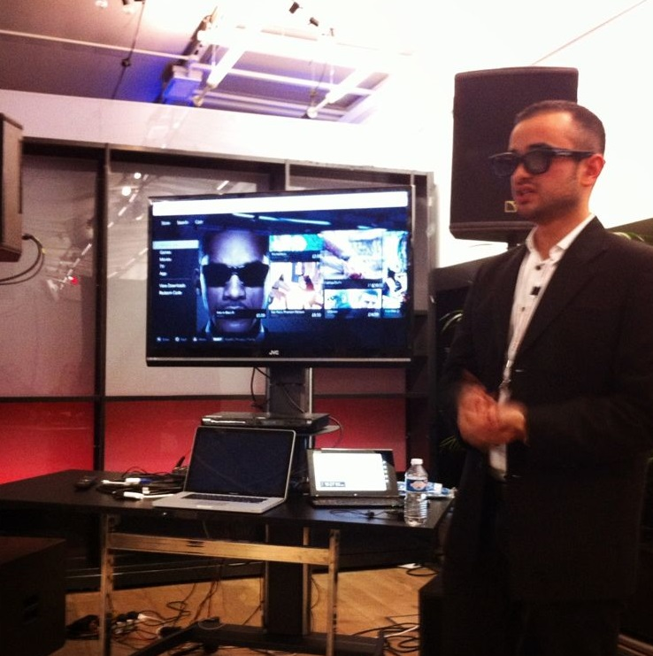

past presentations
JS Montly
 London, UK. 22 August, 2017
London, UK. 22 August, 2017
Co-presenting a talk with Uve. "WebVR: Connecting people, pandas and you"
Bridging experiences with the web
London, UK. 7 July, 2017
Let me explain how can we bridge worlds and experiences by tapping a link.

VR Tranquilities
 Paris, France. 28 June, 2017
Paris, France. 28 June, 2017
Presented a VR collaboration with fashion designer Galina Mihaleva at LOOK FORWARD FASHION TECH FESTIVAL.
Read a recap of the event here.
Bridging experiences with WebVR
 Nanyang, Singapore. 21 June, 2017
Nanyang, Singapore. 21 June, 2017
Presented at the ADM 2017 Symposium on Innovation, Biodesign, Culture, and Technology
Progressive WebVR Applications: a modern VR approach.
 Crans-Montana, Switzerland. 11 - 14 May, 2017
Crans-Montana, Switzerland. 11 - 14 May, 2017
Slides can be found here.


WebVR Panel: VRX Europe 2017
London, UK. 11 May, 2017
Participated as a panelist with Dom Hazael-Massieux (W3C), Salvador de la Puente (Mozilla), Thomas Flynn (Sketchfab). Chaired by Tony Parisi (Unity).


WebVR Panel: VR World Congress 2017
London, UK. 13 April, 2017
Participated as a panelist with Thomas Balouet, Fabien Benetou, and Antti Jädertpolm. Chaired by Amir-Esmaeil Bozorgzadeh.
Find the recording of the panel here.


Rave Sessions: WebVR
London, UK. 10-11 April, 2017
Gave two consecutive workshops at Ravensbourne College in London about WebVR and A-Frame.
Find the slides here.


WebVR Tutorial
 Los Angeles, USA. 18 March, 2017
Los Angeles, USA. 18 March, 2017
The tutorial focuses on Virtual Reality on the web and how researchers and developers can leverage its power to create content. Recap of my trip here.


Hypertextual-Reality
Madrid, Spain. - 10 March, 2017
Presented at Web Games Day (part of Mozilla Dev Road Show) event in Madrid. You can watch the presentation here.


Realidad Virtual llega a tu navegador favorito
Madrid, Spain. - 9 March, 2017
Presented at MadridJS meetup about WebVR. You can watch the presentation here.

Hypertextual-Reality: VR on the Web
Barcelona, Spain. - 1 March, 2017
Presented "Hypertextual-Reality: VR on the Web" at Mobile World Progress Barcelona 2017. Find a recap of our trip to the catalan capital here.
You can watch the presentation here!


WebVR - An introduction
London, United Kingdom. - 13 February, 2017
The session provides information on the experimental WebVR JavaScript API. It covers current specification status, discusses available support from major browsers, and development options available for content producers.

PWACMAN: Christmas 2016 Spectacular
London, United Kingdom. - 6 December, 2016
Session presented at the Christmas 2016 Spectacular about a PacMan like WebVR demo. Said to be the first "sing-along" London Web Performace meetup. Watch it here.

WebVR session @ Mozfest 2016
London, United Kingdom. 28 - 10 October, 2016
Joined my Samsung Internet colleagues for a WebVR presentation. Here's a recap!


Empowering through VR.
 Karlsruhe, Germany. 28 - 2 Septermber/October, 2016
Karlsruhe, Germany. 28 - 2 Septermber/October, 2016
Podiums diskussion about VR and how it can empower people at the BEYOND Festival. Watch it here.


Clustering to Categorize Desirability in Software.
 Santorini, Greece. 4 - 6 July, 2016
Santorini, Greece. 4 - 6 July, 2016
Presented about an Card Sorting exercise over Product Reaction Cards to categorise desirability at the The Digital Media Industry and Academic Forum 2016.

Exploring the Introduction of Stereo Depth in Applications to Change Perceived Quality.
 Lisbon, Portugal. 6 - 8 June, 2015
Lisbon, Portugal. 6 - 8 June, 2015
Presented poster an article at the International Conference for Quality of Multimedia Experience.

S3Doodle: Case Study for Stereoscopic GUI and User Content Creation
 Dubai, United Arab Emirates. 16 - 18 May, 2015
Dubai, United Arab Emirates. 16 - 18 May, 2015
Presented a project called "S3Doodle: Case Study for Stereoscopic GUI and User Content Creation" at the 4th International Conference on Communication, Media, Technology and Design.

Hacking HTML5 Canvas to Create a Stereo 3D Renderer
Arles, France. 23 - 24 March, 2015
Presented a poster to the IEEE 3DUI 2015 conference. The poster can be seen here.
{kind=link}
Let's not bore Alice: Stereo 3D Applications
Karlsruhe, Germany. 9 - 12 October, 2014
Presented a lecture about the use of 3D in applications. Also, participated in two panels titled "Don't wait for the content to be produced, use what's there and design it for the future!" and "3D is dead, long live 3D". Link to recording found here.

Articulating the Third Dimension Online
London, UK. 12 - 13 March, 2014
Presented about HTML web page conversion to stereo at the 3D Creative Summit 2014.

Breaking the Pattern: Study On Stereoscopic Web Perception
 Guanacaste, Costa Rica. 2 - 6 December, 2013
Guanacaste, Costa Rica. 2 - 6 December, 2013
Presented an article about an eye-tracking study on a search engine result page. This article is found in the conference proceedings of the 7th International Conference on Ubiquitous Computing & Ambient Intelligence.
Bringing the Web Closer: Stereoscopic 3D Web Conversion
Guanacaste, Costa Rica. 2 - 6 December, 2013
Presented an article about a tool that allows the conversion of HTML web pages. This article is found in the conference proceedings of the 6th Latin American Conference on Human Computer Interaction.
Build + Teach the Web track: Stereo 3D Apps
London, UK. 25 - 26 October, 2013
Mozilla Festival 2013.

Research Strand Panel: Emerging Techniques and Processes
London, UK. 27 - 28 March, 2013
Panelist at the 3D Creative Summit 2013.

Evaluation of Depth Cues in 3D Subtitling
Istanbul, Turkey. 9 - 11 May, 2012
Presented at the International Conference on Communication, Media, Technology and Design.